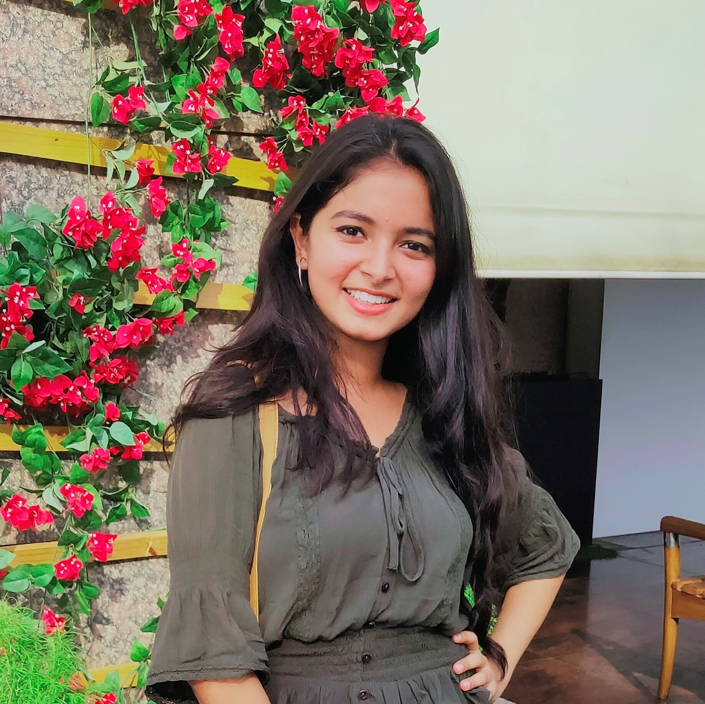

Student of Bachelor of Technology, Computer Science at Indira Gandhi Delhi Technical University for Women (IGDTUW). Selected as a Mitacs Globalink Research Internship Scholar, 2021 with the Data Science Laboratory, University of Regina and working as a Federated Learning Researcher. Experienced in Data Structure and Algorithm Design in C/C++ for 3+ years. Knowledgeable in OS, OOPs, DBMS, and an experienced programmer in Python. Previously worked on Autism Detection using EEG data with Prof. Anupam Agrawal from the Indian Institute of Information Technology, Allahabad (IIITA). Research publication on Emotion Detection using Facial Images with Asst. Prof. Priti Rai Jain from Miranda House, Delhi University (DU). Forever exploring new domains but a Machine Learning and Artificial Intelligence Enthusiast at heart.